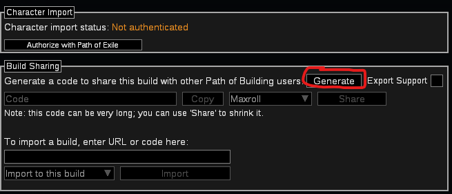
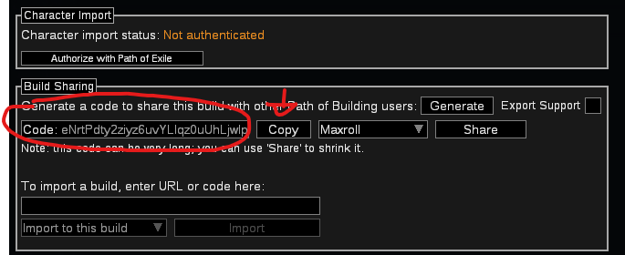
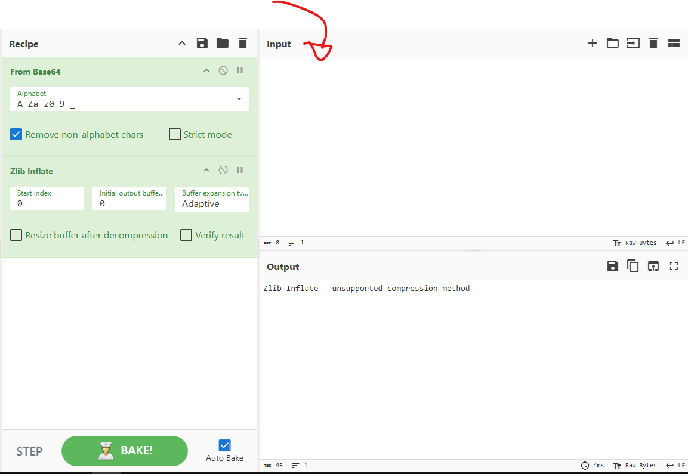
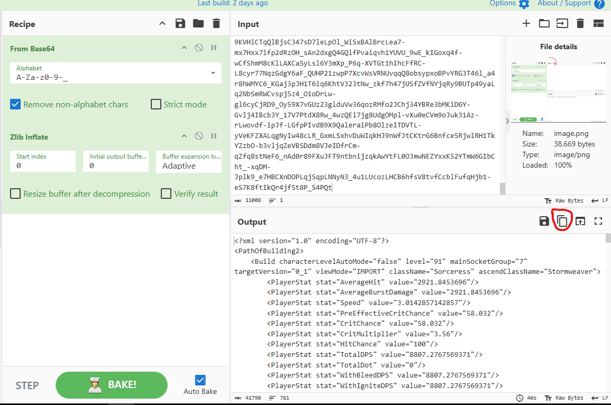
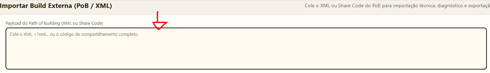

1
Como Obter o XML da Sua Build
O Path of Building 2 exporta um código comprimido. Você precisará convertê-lo para XML usando o CyberChef antes de colar aqui. Siga os passos abaixo (clique nas imagens para ampliar):
Abrir CyberChef Pré-configurado
PASSO 1
Gerar código no PoB2

PASSO 2
Copiar o código

PASSO 3
Colar no CyberChef & Bake

PASSO 4
Copiar o XML do Output

PASSO 5
Colar o XML abaixo ↓

2
Colar e Importar o XML
💡
O XML começa com
<PathOfBuilding> ou <PathOfBuilding2>